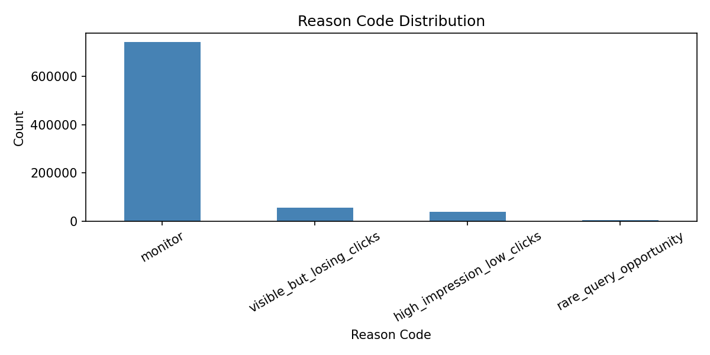

FlyRank ML Internship — Applied Search Intelligence Track — August 2026
A content strategist managing hundreds of pages across dozens of clients cannot review everything every week. The question this work addresses is: which query-page pairs show signals of declining click performance and deserve human review first?
A wrong recommendation costs reviewer time — a false positive sends someone to a healthy page. A missed opportunity means a declining page goes unreviewed and keeps losing clicks. The output of this system is a ranked list, not an automated action.
Source: FlyRank internship warehouse, build flyrank_pseudonymized_warehouse_release_v20260703, hosted on Hugging Face at FlyRank/internship-warehouse.
| Table | Rows | Grain |
|---|---|---|
| fact_content_query_90d | 2,414,248 | client × content × query hash (fixed 90-day window) |
| dim_clients | 104 | one per pseudonymized client |
Time window: Fixed 90-day snapshot with pre-computed last-30 and previous-30 day sub-windows. Window start: 2026-04-02.
Excluded: Rows with fewer than 10 impressions in the last 30 days — too sparse to distinguish signal from noise. Inactive clients excluded via is_active IS TRUE filter.
All identifiers are pseudonymized. No client names, domains, URLs, or raw queries appear in this analysis.
Label / proxy: is_rising = (clicks_last30 > clicks_prev30) — a binary proxy for click momentum. Base rate: 6.1% of eligible rows.
Safe features used: impressions_90d, avg_position_90d, query_char_count, query_token_count, content_visible_query_count, rare_query_count, rare_impressions_share, anonymized_impressions_share. No click columns used as features — clicks derive the label.
Baseline rule: Rank by impressions_last30 × ABS(click_delta) with reason code visible_but_losing_clicks.
Model: Random Forest Classifier (100 trees, random_state=42).
Validation design: Grouped client holdout — 80% of clients for training (39 clients), 20% for testing (10 clients). No client appears in both train and test. This tests generalization to unseen clients.
Leakage checks: click_delta was identified as a leaky feature (score jumped to 1.0 when included) and removed. Random split vs grouped split gap (0.85 → 0.20) confirmed client-level memorization in the random split.
| Method | Precision@20 |
|---|---|
| Base rate (random) | 0.061 |
| Baseline (impressions rule) | 0.300 |
| Logistic Regression | 0.100 |
| Random Forest (grouped split) | 0.200 |
All results computed on the same 10-client holdout set under grouped client split.

Figure 1: Distribution of reason codes across 838,657 eligible query-page pairs. The majority are flagged for monitoring; 55,340 are flagged as visible_but_losing_clicks.
| Reason Code | Action | Count |
|---|---|---|
| visible_but_losing_clicks | review_query_targeting | 55,340 |
| high_impression_low_clicks | review_title_and_meta | 37,462 |
| rare_query_opportunity | expand_content_coverage | 3,218 |
| monitor | no_action_now | 742,637 |
Pages are ranked by baseline_score = impressions_last30 × ABS(click_delta). A content team with capacity to review 20 pages per week should work from the top of the visible_but_losing_clicks queue downward.
What should NOT be automated: No content edits, page deletions, or merges should be triggered automatically. This queue is a prioritization tool for human reviewers only.
All notebooks are in github.com/aamnamalik16-bit/flyrank-ML-internship under work/notebooks/:
To reproduce: clone the repo, set HF_TOKEN in Colab Secrets, run notebooks in order. Random seed: 42.
Built on the FlyRank ML Internship dataset — a pseudonymized warehouse release of real production search and analytics data. Data source: flyrank.ai. Dataset: FlyRank/internship-warehouse on Hugging Face.